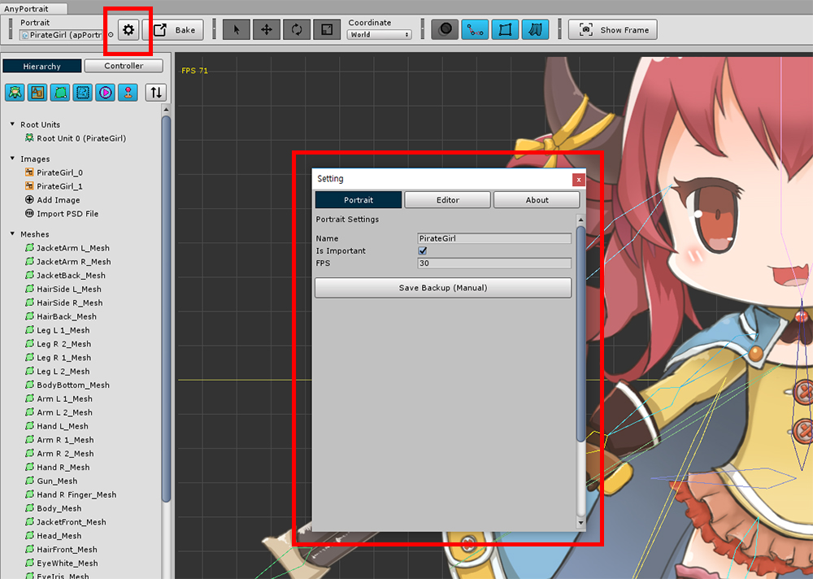
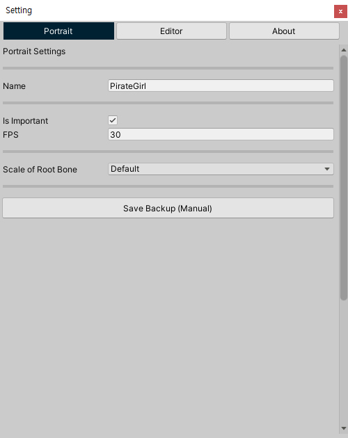
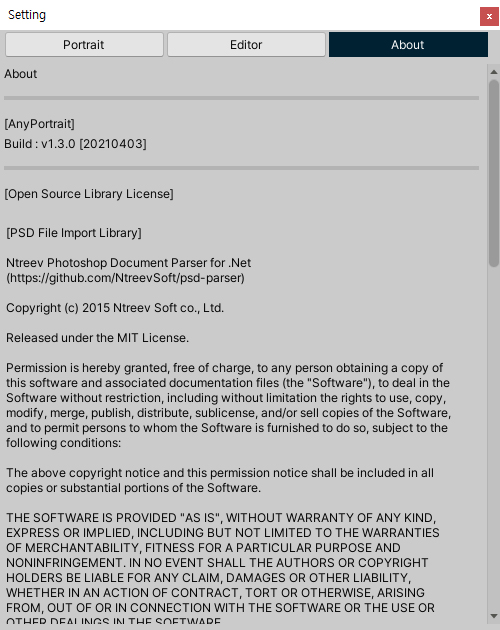
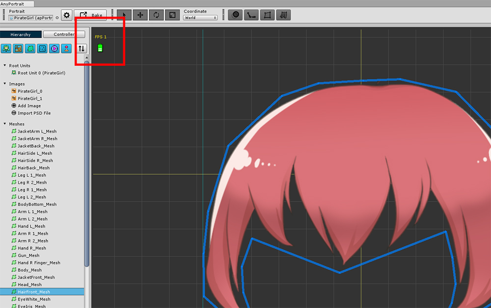
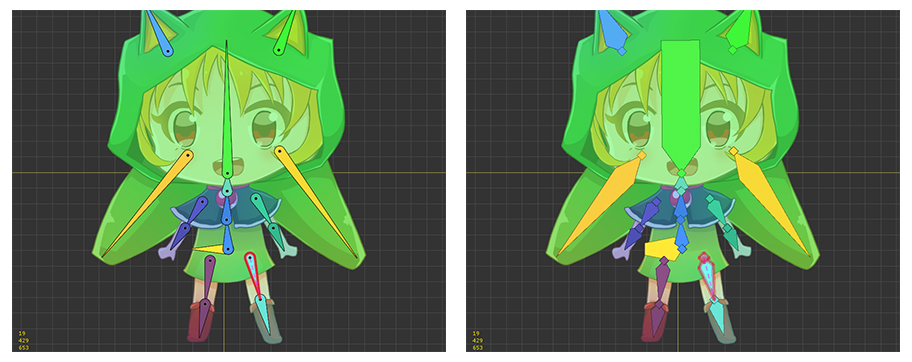
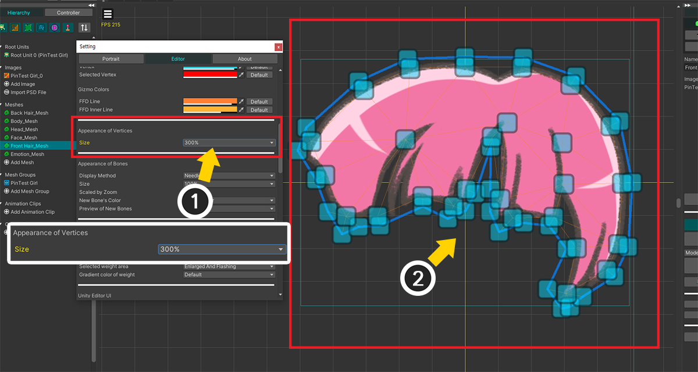

AnyPortrait > 메뉴얼 > 설정 다이얼로그
설정 다이얼로그
1.4.2

"설정 다이얼로그(Setting Dialog)"를 이용하여 AnyPortrait 에디터나 캐릭터의 설정을 변경할 수 있습니다.
에디터의 상단의 톱니바퀴 아이콘을 클릭하면 "설정 다이얼로그"가 열립니다.

Portrait 탭을 선택하면 현재 작업 중인 Portrait의 기본 설정이 나타납니다.
(Bake에 관련된 설정은 "Bake 다이얼로그" (관련 페이지)에서 변경할 수 있습니다.)
1. Name : Portrait의 이름입니다.
2. Is Important, FPS
: Important 옵션입니다.
이 옵션이 켜지면 매 프레임마다 업데이트가 되며, 옵션이 꺼지면 FPS의 값만큼의 빈도로 업데이트를 합니다.
자세한 내용은 관련 페이지에서 확인하세요.
3. Scale of Root Bone : 본의 크기에 대한 연산 방식입니다.
자세한 내용은 관련 페이지에서 확인하세요.
4. Save Backup (Manual) : 백업 파일을 만듭니다.

Editor 탭에서는 AnyPortrait에 관련된 설정을 변경할 수 있습니다.
에디터의 언어, 표시되는 정보, 자동 백업, 색상 등의 옵션들을 변경할 수 있습니다.
자세한 내용은 아래에서 확인하실 수 있습니다.

About 탭에서는 AnyPortrait 빌드 버전이 명시되어 있으며, AnyPortrait에 포함된 오픈소스 라이센스가 명시되어 있습니다.
AnyPortrait는 유니티의 "Asset Store Terms of Service and EULA"를 따르고 있으므로 여기에 별도로 명시하지 않습니다.
(서비스 약관 페이지)
Editor 탭의 설정

1. Language
: 에디터의 언어를 바꿀 수 있습니다. (영어, 한국어, 프랑스어, 독일어, 스페인어, 이탈리아어, 덴마크어, 일본어, 중국어, 폴란드어)
2. Show FPS
: 에디터의 FPS (Frames Per Second)를 작업 공간에 출력합니다.
3. Show Statistics
: 렌더링되는 대상의 버텍스의 수, 메시의 수와 같은 정보들을 작업 공간에 출력합니다.
4. Size of Control Paramter UI
: 화면 왼쪽의 컨트롤 파라미터 UI의 높이를 변경할 수 있습니다. (v1.4.0)
5. Update Mode
: 에디터 자체의 업데이트 방식을 결정합니다. 기존의 호환 모드(Compatible Mode)가 선택되어 있으며, 성능 향상을 위해 외부의 플러그인을 설치하여 동작하는 가속 모드(Accelerated Mode)로 변경할 수도 있습니다. (v1.3.2)
6. Auto Backup, Time, Save Path
: 자동 백업 설정입니다. 몇분마다 저장할 지, 어느 경로에 저장할지 설정할 수 있습니다.
7. Pose Snapshot Setting
: 본이 포함된 애니메이션을 만들때 포즈를 저장하고 열 수 있는데, 이때의 경로를 설정합니다.
8. Background Colors
: 작업 공간의 배경 색상과 격자 및 Atlas의 외곽선의 색상입니다.
9. Mesh GUI Colors
: 메시와 버텍스, 외곽선 등의 색상입니다.
10. Gizmo Colors
: FFD 도구의 색상을 설정할 수 있습니다.
11. Appearance of Vertices
: 작업 공간에서 버텍스 및 핀들이 어떻게 보일지를 설정할 수 있습니다. (v1.4.2)
12. Appearance of Bones
: 작업 공간에서 본이 어떻게 보일지를 설정할 수 있습니다.
13. Rigging and Circular Vertices
: 리깅을 하는 과정에서 버텍스가 어떻게 보여질지 설정할 수 있습니다.
14. Shortcuts Settings
: 에디터에서의 단축키들을 변경할 수 있습니다. (v1.3.0)
15. Edit Mode Options
: 편집 모드시 모디파이어의 동작 방식, 작업 공간에서 보여지는 정보들을 설정할 수 있습니다. (v1.3.0)
16. Advanced Settings
: 에디터의 동작을 세부적으로 설정할 수 있습니다.
옵션의 내용들은 아래와 같습니다.
- 에디터 시작시 시작 화면 출력 여부
- 최신 버전 체크 여부
- 노트북 발열 방지용 최적화 기능
- 씬의 Ambient 색상을 Bake시 조절하는 기능 사용 여부
- 모디파이어나 애니메이션 클립 작업시 "컨트롤러 탭"으로 전환될 지 여부
- 일시적인 메시의 보이기/숨기기 설정이 작업 종료시에 자동으로 복구될 지 여부
- 새로 추가되는 본의 색상이 부모 본의 색상과 유사하게 설정될 지 여부
- PSD 파일로부터 메시가 생성되었을 때, 메시의 버텍스들을 초기화할지 물어보는 다이얼로그의 출력 여부 (v1.2.4)
- 작업 공간에서의 보기 옵션을 변경하는 버튼들을 계속해서 보여줄지 여부 (v1.3.0부터는 해당 버튼들이 보기 메뉴로 이동됨)
- 이미지가 1개인 경우, 메시를 생성할 때 자동으로 해당 이미지가 설정될 지 여부 (v1.3.0)
- 애니메이션의 Auto-Keyframe 기능이 작업 시작시 자동으로 비활성화 되는지 여부 (v1.3.0)
- 상황에 따라 편집 모드 실행시 선택 잠금 켤지 여부
- Bake시 Render Pipeline 옵션이 프로젝트 설정에 맞지 않는 경우 자동으로 변경하는 메시지를 보여줄지 여부 (v1.3.5 / 유니티 2020부터 적용)
- 보기 프리셋이 다른 객체를 선택할 때 자동으로 비활성화될 지 여부 (v1.4.0)
- 객체 선택시 리스트가 자동으로 스크롤될 지 여부 (v1.4.1)
- 객체를 클릭한 이후에 이어서 드래그를 할 경우 기즈모를 클릭하지 않은 상태에서 바로 객체를 이동할 수 있는지 여부 (v1.4.2)
17. Restore 버튼
: 모든 설정을 기본값으로 되돌립니다.
18. Export/Import 버튼
: 에디터의 설정을 파일로 내보내거나, 또는 파일에서 에디터의 설정을 가져올 수 있습니다. (v1.4.2)
노트북 발열 방지를 위한 에디터 최적화 기능
1.1.6
많은 사용자분들이 노트북으로 유니티를 이용하고 있습니다.
AnyPortrait는 기본적으로 유니티의 성능을 최대로 활용하는데,
이러한 점 때문에 노트북의 발열이 심해져서 불편을 겪고 있다는 피드백을 받았습니다.
일부 기기에서는 발열의 정도가 매우 심하여 작업이 힘들 수 있습니다.
v1.1.6에서 추가된 옵션을 켜면 선택적으로 에디터의 성능을 제한하여 심한 발열을 방지할 수 있습니다.
설정 다이얼로그에서 Editor 탭을 선택한 뒤 "Optimize the editor's performance for laptops" 옵션을 켭니다.

최적화 옵션이 켜지면 실시간으로 업데이트가 되는 상황이 아니라면 에디터의 성능이 대폭 감소됩니다.
성능이 제한되는 상황에서는 작업 공간 좌측 상단에 녹색의 배터리 아이콘이 나타납니다.
이 옵션의 특징은 아래와 같습니다.
- 애니메이션이 재생되는 모든 상황에서는 에디터가 기존과 동일하게 동작합니다.
- 루트 유닛을 선택한 경우, 애니메이션을 재생하거나 화면을 캡쳐하는 상황을 제외하고 성능이 제한됩니다.
- 이미지나 메시, 컨트롤 파라미터를 선택한 경우, Pivot 편집을 제외한 모든 상황에서 성능이 제한됩니다.
- 메시 그룹을 선택한 경우, Physics 모디파이어를 선택하거나 Blur 툴을 사용하는 경우를 제외하고 성능이 제한됩니다.
- 애니메이션을 편집하는 경우, 애니메이션을 재생하는 중이거나 Blur 툴을 사용하는 경우를 제외하고 성능이 제한됩니다.
- 성능이 제한된 상태에서는 물리 효과나 IK가 다소 부자연스럽게 동작할 수 있습니다.
본과 리깅의 작업 공간에서의 외형에 관한 설정
1.2.3

1. Appearance of Bones : 본의 외형에 관한 설정입니다.
- Display Method : "화살촉 모양(Arrowhead)"이나 "바늘 모양(Needle)"을 선택하여 본의 외형을 바꿉니다.
- Size : 본의 크기입니다. 값이 증가하면 폭이 넓어집니다.
- Scaled by Zoom : 작업 공간의 확대/축소에 따라 본의 크기가 바뀔지 여부를 결정합니다.
- New Bone's Color : 본을 추가할 때, 부모 본의 색상과 유사한 색상 또는 완전히 다른 색상을 갖게 만들지 선택할 수 있습니다.
- Preview of New Bones : 본을 생성할 때, 마우스 커서가 있는 위치로 생성될 본의 미리보기 방식을 변경합니다. (v1.4.2)
2. Rigging and Circular Vertices : 리깅 모디파이어에서 편집을 할 때, 원형의 리깅 가중치 버텍스에 관한 설정입니다.
- Size of vertices : 기본적인 원형 버텍스의 크기입니다.
- Size of selected vertices : 선택된 원형 버텍스의 크기입니다.
- Scale vertices by Zoom : 작업 공간의 확대/축소에 따라 원형 버텍스의 크기가 바뀔지 여부를 결정합니다.
- Selected weight area : 선택된 본의 리깅 가중치에 대한 영역에 효과를 줄 수 있습니다. "Enlarged"를 선택하면 대상 영역의 크기가 확대됩니다. "Flashing"을 선택하면 대상 영역이 반짝입니다.
- Gradient color of Weight : 본의 색상이 아닌 가중치 값에 의한 그라데이션 색상으로 출력할 때, 그라데이션의 색상을 결정할 수 있습니다. "Default"를 선택하면 기존에 사용된 색 조합이 나타납니다. v1.2.3에 추가된 "Vivid"를 선택하면 밝고 구분되기 쉬운 색 조합의 그라데이션이 나타납니다.

바늘 모양(Needle)과 화살촉 모양(Arrowhead)으로 출력되는 본의 외형입니다.

선택된 본의 가중치 영역에 효과를 주었을 때와 그렇지 않을 때의 차이입니다.

리깅 가중치의 그라데이션 색상입니다. 왼쪽은 Default 옵션이 적용되었으며 오른쪽은 Vivid 옵션이 적용되었습니다.
본 생성시의 미리보기 외형 중, Line 방식은 "굵은 선"이 본이 생성될 위치를 보여주며, Ghost 방식은 "반투명한 본"이 대신 나타납니다.
유니티의 Hierarchy에서 아이콘 보이기
1.3.4

유니티 씬에서 AnyPortrait로 제작한 캐릭터를 쉽게 구분하기 위해 새로운 옵션이 추가되었습니다.
Editor 탭에서 Hierarchy Icon 옵션을 설정하면 유니티 에디터의 Hierarchy 탭에 아이콘이 추가됩니다.
- Hide Icons : 아이콘 보이지 않기
- Show Icons (Left) : 이름의 왼쪽에 아이콘 보이기
- Show Icons (Right) : 이름의 오른쪽에 아이콘 보이기

옵션을 설정하면 유니티 에디터의 Hierarchy에서 AnyPortrait 캐릭터를 쉽게 찾을 수 있습니다.
컨트롤 파라미터 UI의 크기 바꾸기
1.4.0
AnyPortrait 에디터의 좌측에 위치한 컨트롤 파라미터 UI를 이용하여 편집을 하고자 할 때, Vector 타입의 컨트롤 파라미터의 UI가 작다고 느껴지는 경우가 있습니다.
이때 필요한 옵션이 v1.4.0에 추가되었습니다.
(1) Size of Control Paramter UI 옵션의 값이 Default으로 설정된 상태입니다.
(2) 위와 같이 Vector 타입의 컨트롤 파라미터 UI가 다소 납작하게 보여집니다.
위와 같은 UI의 형태는 다수의 컨트롤 파라미터들을 동시에 보기엔 편하지만, 조작하기에는 꽤 불편합니다.
(1) Size of Control Paramter UI 옵션을 Large로 변경해봅시다.
(2) Vector 타입의 컨트롤 파라미터 UI의 높이가 꽤 커진 것을 볼 수 있습니다.
이제 UI를 이용하기가 편리할 것입니다.
버텍스와 핀의 크기
1.4.2

(1) Appearance of Vertices에서 Size 옵션을 변경하여
(2) 작업 공간에서 보여지는 버텍스나 핀의 크기를 변경할 수 있습니다.
이 기능은 AnyPortrait의 기본 해상도인 FHD (1080p) 이상의 해상도에서 버텍스나 핀이 너무 작게 보이는 문제를 해결할 수 있습니다.
크기가 증가함에 따라 클릭 범위도 증가하는 것은 물론이고, 만약 고해상도의 화면에서 작업한다면 옵션과 별개로 자동으로 클릭 범위가 조금 더 확장됩니다.
에디터 설정을 파일로 내보내기/파일에서 가져오기
1.4.2
에디터의 설정을 파일로 내보내서 다른 개발 환경으로 복사하고자 할 수 있습니다.
파일로 내보내기 기능은 단축키 설정도 포함합니다.
Editor 탭의 하단에 Export 버튼과 Import 버튼이 있습니다.
- Export : 현재 에디터의 설정을 파일로 내보냅니다.
- Import : 파일로부터 에디터의 설정을 가져옵니다.